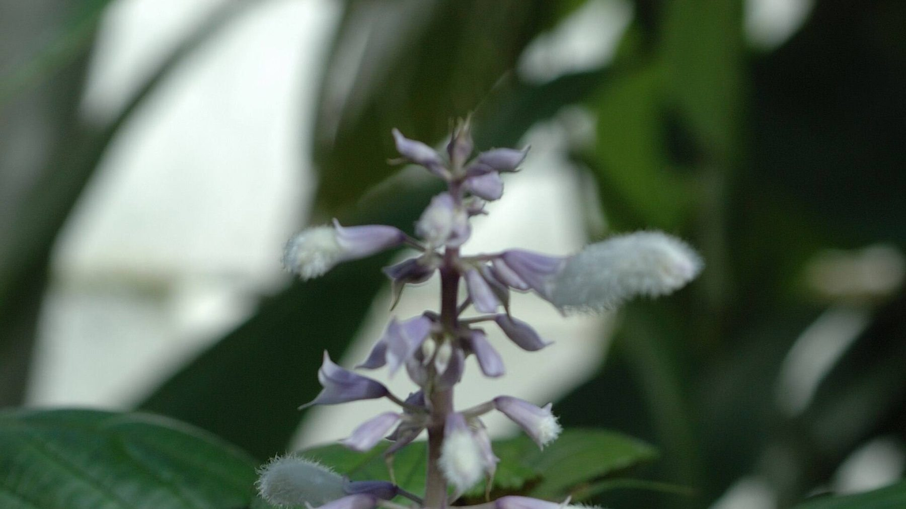
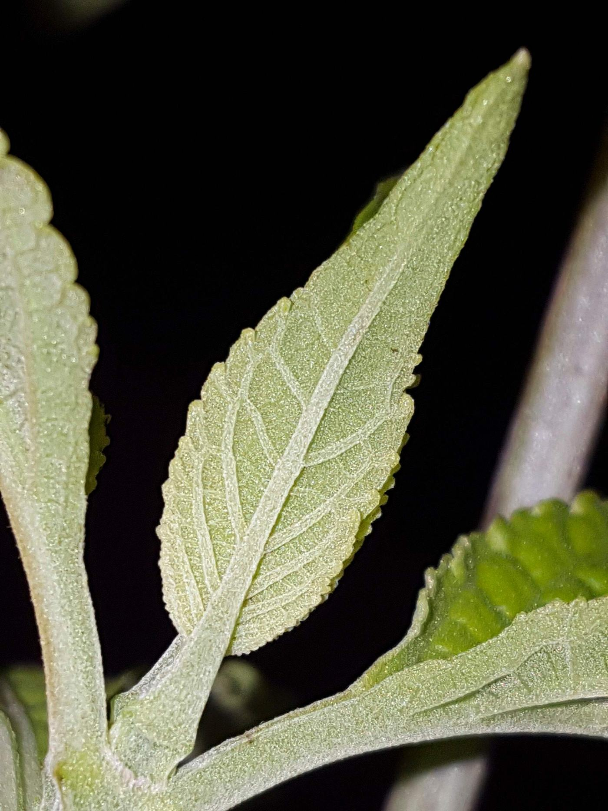
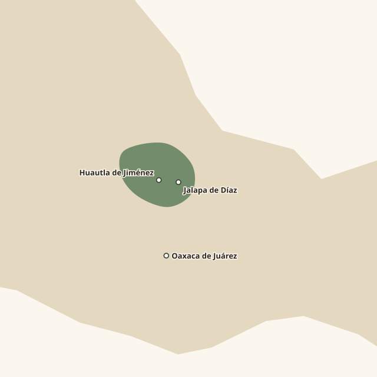
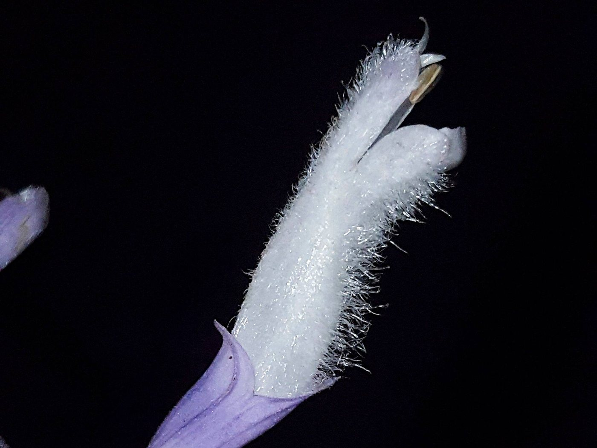
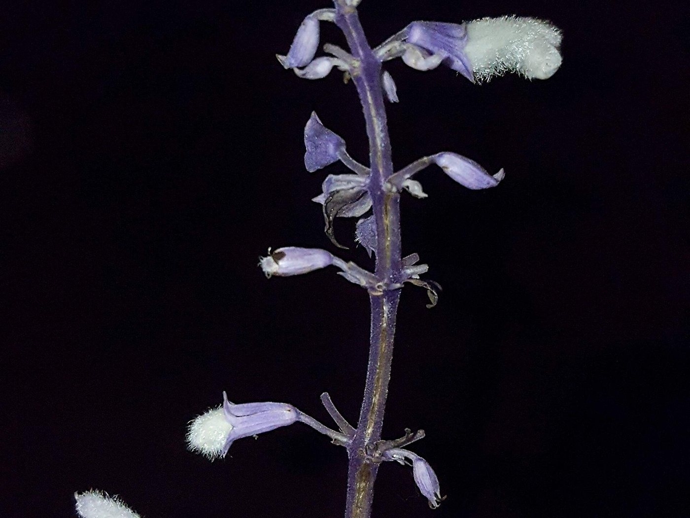
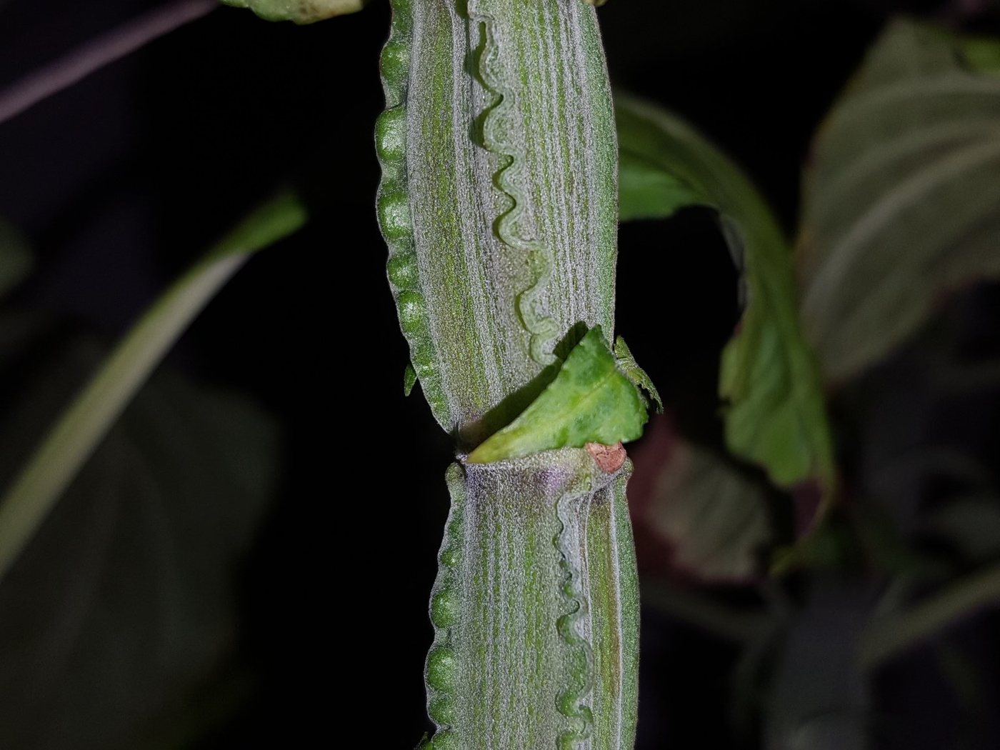
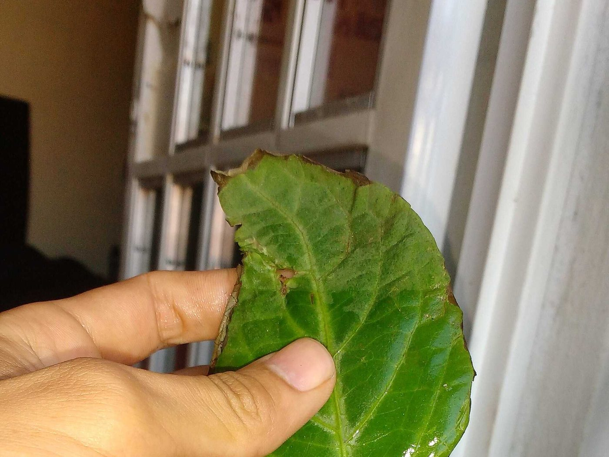

Planta · Lamiáceas · Sierra Mazateca (Oaxaca)
Hierba de la pastora
Salvia divinorum Epling & Játiva
En la sierra mazateca de Oaxaca crece una menta que los curanderos llaman ska Pastora y asocian a la Virgen María. Sirve para curar y para adivinar, y su principio activo no actúa sobre la serotonina, sino sobre un receptor opioide.48
También se llamaska Pastora · ska María · salvia de los adivinos · hoja de la adivinación

- Qué es
- Menta perenne del bosque de niebla, de área muy pequeña
- Territorio
- Sierra Mazateca, en Oaxaca (México)
- Parte usada
- Las hojas, frescas o secas
- Principio activo
- Salvinorina A
- Empieza y dura
- Segundos fumada · 5–15 min de efecto intenso
- Quién guarda su memoria
- El pueblo mazateco
Botánica
Una menta de tallo cuadrado
Es una hierba perenne que puede pasar del metro de altura. Su rasgo más claro es el tallo de cuatro caras, a veces casi cuadrado y de hasta dos centímetros de grosor, del que salen hojas opuestas.2
Las hojas son verdes, lanceoladas, cubiertas de pelillo fino y de más de veinte centímetros. Las flores nacen en espigas: pétalos blancos dentro de un cáliz azulado o violeta. En México florece sobre todo en enero.2
En cultivo casi nunca da frutos y, cuando da semillas, rara vez germinan: se multiplica por esquejes. Por eso casi todas las plantas del mundo son clones de unas pocas colectas hechas en Oaxaca.3

- Familia
- Lamiaceae (las mentas)
- Porte
- Hierba perenne, más de 1 m
- Tallo
- De cuatro caras, casi cuadrado
- Flor
- Blanca, con cáliz violeta
Memoria y tradición
La hoja de la Virgen
El pueblo mazateco la usa desde hace generaciones para curar y para adivinar, mascando las hojas frescas o bebiendo su jugo. La asocia a la Virgen María, de donde vienen sus nombres de ska Pastora y ska María.8
Para el mundo de fuera es una planta reciente. En 1962, R. Gordon Wasson dio a conocer su uso adivinatorio y, el mismo año, los botánicos Carl Epling y Carlos Játiva la describieron como especie.2910
Hay quien propone que los mexicas ya la conocían con el nombre de pipiltzintzintli, pero es una hipótesis.2
En el tiempo
Wasson da a conocer su uso adivinatorio; Epling y Játiva la describen como especie nueva.29
Albert Hofmann no encuentra el principio activo en su primer análisis del jugo.2
Se identifica la salvinorina A, casi a la vez, en dos laboratorios.3
Se comprueba que la salvinorina A es la responsable del efecto y que el aparato digestivo la inactiva.5
Se descubre que actúa sobre el receptor opioide kappa.4
Ensayo en la Universidad Johns Hopkins con salvinorina A inhalada en personas sanas.6
Un equipo de Barcelona describe cómo bloquea la percepción externa y cambia la del propio cuerpo.7
Sus nombres
- ska Pastora
- mazateco
- ska María
- mazateco
- hierba de la pastora
- castellano de México
- salvia de los adivinos
- castellano
- pipiltzintzintli
- náhuatl; quizá esta planta, según algunos autores
Territorio y cuidado
Un rincón del bosque de niebla

Es endémica de la región mazateca de la Sierra Madre Oriental, en Oaxaca. Crece de forma natural en bosques tropicales húmedos y de niebla, entre los 300 y los 1.800 metros de altitud.2
Por lo reducido de su territorio es una de las plantas enteógenas más raras. Fuera de allí solo se encuentra cultivada, en jardines botánicos y en casas.2
Qué ayuda
- Respetar su uso tradicional y a quienes lo guardan.
- Multiplicarla por esquejes en lugar de recolectarla del bosque.
- No llamar «ancestral» a lo que es reciente.
Qué contiene
Una molécula sin nitrógeno
La salvinorina A es la sustancia responsable. Es un compuesto sin nitrógeno, algo poco habitual entre las sustancias psicoactivas, y actúa de forma muy selectiva sobre el receptor opioide kappa, no sobre la serotonina.4
Tragada, el aparato digestivo la inactiva. Por eso la forma tradicional es mascar las hojas o mantener el jugo en la boca, para que se absorba por la mucosa.5
 Salvinorina ADiterpeno · de las hojas
Salvinorina ADiterpeno · de las hojasActiva el receptor opioide kappa, distinto del que usan la morfina y la heroína.
La experiencia
Minutos que parecen otra vida
Con la planta inhalada, el efecto llega en segundos, alcanza su punto más alto hacia los dos minutos y a los veinte ya no queda nada claro.6 Quienes la han probado hablan de espacios curvos, de ser un objeto, de volver a lugares de la infancia o de salir del cuerpo.2
En el laboratorio, la salvinorina A bloqueó la información que llega de la vista y el oído, y a dosis altas se perdía por completo el contacto con el cuerpo.7
Esquema orientativo: cambia con la preparación, la cantidad y la persona.
Investigación
Qué se ha estudiado
En 2011, el equipo de la Universidad Johns Hopkins estudió los efectos de la salvinorina A inhalada en personas sanas con experiencia previa. El efecto máximo llegó a los dos minutos.6
En 2015, un estudio de Barcelona describió que bloquea la percepción de lo que llega de fuera y cambia el sentido del propio cuerpo.7 Una revisión de 2025 recoge su toxicología, su farmacología y su potencial terapéutico.8
Alcance de estos datosSon ensayos pequeños, con supervisión y con salvinorina A, no con la planta. No existe ningún medicamento con salvia divinorum ni ensayos clínicos que justifiquen un uso terapéutico.
Con cuidado
Lo que conviene saber antes
Durante el efecto se puede perder el contacto con el cuerpo y el entorno: es fácil caerse o quemarse. La experiencia puede asustar.7
Cansancio, mareo y lagunas de memoria; se han descrito psicosis duraderas en personas vulnerables.3
La concentración real de los productos es desconocida. Los extractos «5x», «10x» o «20x» varían mucho de potencia.3
Solo la Salvia divinorum contiene salvinorina A, y otras salvias pueden dañar el hígado.8
Galería
Mirar de cerca




Para seguir
Libros y medicinas emparentadas
 Shamanic Quest for the Spirit of SalviaRoss Heaven · 2012En la biblioteca de APDER →Biblioteca de APDERPharmacotheonPharmacotheonJonathan Ott · 1993En la biblioteca de APDER →
Shamanic Quest for the Spirit of SalviaRoss Heaven · 2012En la biblioteca de APDER →Biblioteca de APDERPharmacotheonPharmacotheonJonathan Ott · 1993En la biblioteca de APDER → Salvia DivinorumJ. D. Arthur · 2010En la biblioteca de APDER →
Salvia DivinorumJ. D. Arthur · 2010En la biblioteca de APDER →La molécula de las hojas, que actúa sobre el receptor kappa.
MoléculaKetaminaKetaminaOtro disociativo, con una acción distinta en el cerebro.
CactusPeyoteLophophora williamsiiOtra medicina de México: el cactus del desierto chihuahuense.
Semillas que usan también pueblos de Oaxaca.
Fuentes
De dónde sale cada dato
- Royal Botanic Gardens, Kew. Plants of the World Online: Salvia divinorum Epling & Játiva. powo.science.kew.org.
- Rätsch C. The Encyclopedia of Psychoactive Plants. Rochester: Park Street Press; 2005. Entrada «Salvia divinorum».
- EUDA (Agencia de la Unión Europea sobre Drogas). Salvia divinorum drug profile. euda.europa.eu.
- Roth BL, Baner K, Westkaemper R, et al. Salvinorin A: a potent naturally occurring nonnitrogenous κ opioid selective agonist. Proc Natl Acad Sci USA. 2002;99(18):11934-11939.
- Siebert DJ. Salvia divinorum and salvinorin A: new pharmacologic findings. J Ethnopharmacol. 1994;43(1):53-56.
- Johnson MW, MacLean KA, Reissig CJ, Prisinzano TE, Griffiths RR. Human psychopharmacology and dose-effects of salvinorin A, a kappa opioid agonist hallucinogen present in the plant Salvia divinorum. Drug Alcohol Depend. 2011;115(1-2):150-155.
- Maqueda AE, Valle M, Addy PH, et al. Salvinorin-A induces intense dissociative effects, blocking external sensory perception and modulating interoception and sense of body ownership in humans. Int J Neuropsychopharmacol. 2015;pyv065.
- Calado S, Pires B, Rosendo LM, Rosado T, Gallardo E, Duarte AP. Salvinorin A and Salvia divinorum: toxicology, pharmacological profile, and therapeutic potential. Int J Mol Sci. 2025;26(12):5588.
- Epling C, Játiva-M CD. A new species of Salvia from Mexico. Botanical Museum Leaflets, Harvard University. 1962;20(3):75-76.
- Wasson RG. A new Mexican psychotropic drug from the mint family. Botanical Museum Leaflets, Harvard University. 1962;20(3):77-84.
- Inflorescencia de Salvia divinorum: pétalos blancos y cáliz violeta. Eric Hunt · CC BY 2.5
- Hojas jóvenes de Salvia divinorum, con su vello fino. Alexander Abair · CC BY 4.0
- El Cerro Rabón desde San Pedro Ixcatlán, en la zona mazateca de Oaxaca. Koffermejia · CC BY-SA 4.0
- Mapa APDER, con datos de Natural Earth · dominio público
- Jalapa de Díaz, en la región mazateca de Oaxaca. Juanluis92 · CC BY-SA 4.0
- Dibujos de moléculas APDER
- Una flor de cerca: el pétalo blanco, cubierto de pelillo. Alexander Abair · CC BY 4.0
- La espiga completa, con sus flores alternas. Alexander Abair · CC BY 4.0
- El tallo de cuatro caras, su rasgo más reconocible. Alex Abair · CC BY 4.0
- Una hoja con raíces: la planta se multiplica por esquejes. RuzmarOax · CC BY-SA 4.0
Última revisión: 24 de noviembre de 2026. Si ves un error, escríbenos a info@apder.org.